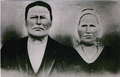

Mary Elizabeth Dillion
15 February 1820 – 5 June 1901
Dillion line · Tazewell County, Virginia; Barkers Ridge, Wyoming County, West Virginia
Profile status: SUPPORTED
Quick Facts
Born
15 February 1820, Virginia SUPPORTED (three compiled sources agree exactly: the Darnell group sheet, the Willie Mills Cemetery survey, and Find a Grave. Her own four censuses best-fit a birth year of about 1822, and the day-month has no independent support beyond those three sources. Her birthplace is unresolved: Tazewell County, Giles County, or Barkers Ridge)
Died
5 June 1901, Wyoming County, West Virginia SUPPORTED (the same three sources agree; no death record or stone has been obtained)
Married
Samuel Paris McKinney, about 1843
UNPROVED (no record of the marriage has been found: the Tazewell registers for 1800-1852 are negative, and Logan County marriages before 1853 are not in the state index. The first child was born 16 October 1844, so the marriage falls before about January 1844)
Buried
Willie Mills Cemetery, Basin, Wyoming County, West Virginia SUPPORTED (the cemetery survey lists her beside S.P.; Find a Grave agrees. No stone photograph for her exists in any source found)
Residence
Barkers Ridge, Wyoming County, West Virginia DOCUMENTED (censuses 1850, 1860, 1870, 1880; the 1900 census finds her aged 77 in son Luke's household)
Surname
"Dillion" is the genuine period spelling (Tazewell and Mercer records 1818-1856); "Dillon" is the modern default (her son Allen's death certificate reads "Betty Dillon"). Nicknames: "Betsey" and "Beckey" SUPPORTED
Immediate Family
Parents
Samuel Dillion ×
Mary “Polly” Rinehart DOCUMENTEDMarried 29 March 1818, Tazewell County, Virginia — the register entry was read from the image: "Samuel Dillion & Polly Rinehart March 29th 1818". Samuel, born about 1794-1796, died after 26 August 1870 in Montgomery County, Missouri; Polly, born about 1793-1796, died 1878 by one compiled account. Both were alive in September 1856 — three Mercer County deeds of that month name them — and in the 1860 and 1870 Missouri censuses, against compiled dates saying both died in 1856. Samuel's father was James Dillon Jr. × Martha "Patsy" Belcher, carried at SUPPORTED on an 1824 deed of natural affection; Polly's father was George Rinehart of Tazewell County, proved by an 1821 certificate — which George Rinehart is open.
Spouse
Samuel Paris McKinney (born 29 June 1822; died 16 February 1898), married about 1843
UNPROVEDNo marriage record has been found: the Tazewell registers for 1800-1852 are negative, and Logan County marriages before 1853 are not in the state index. The first child, Nancy Jane, was born 16 October 1844, so the marriage falls before about January 1844.
Children
Nancy Jane McKinney (born 16 October 1844, Mercer County; died 22 April 1924, Ridgedale Cemetery, Smyth County, Virginia; married (1) William H. Blankenship 25 October 1864, (2) William Harvey Little November 1870)
DOCUMENTED
Martha Ann McKinney (born about 1846; died 1921; married Crockett Akers 5 September 1863)
SUPPORTED
John Wesley McKinney (born 11 May 1848; died 15 May 1931; married Virginia Jane Sizemore 17 September 1868)
SUPPORTED
George Rinehart McKinney (born 8 February 1850; died 16 May 1888; married Victoria Virginia Blankenship 1 September 1870)
DOCUMENTED
Mary Ann "Polly" McKinney (born 14 February 1852; died 25 August 1891; married Alfred Presley McKinney 27 March 1872)
SUPPORTED
Rev. Samuel Mitchell McKinney (born 22 October 1853; died 13 March 1927; married Sarah Ann Cadle 9 October 1873; Methodist minister about 50 years)
SUPPORTED
Luke McKinney (born 8 June 1856; died 29 April 1937, Rupert, Greenbrier County; married Arminta C. Basham 31 August 1876)
SUPPORTED
Hugh Johnson McKinney (born 1857; died 22 September 1917; married (1) Lucy Levina Cadle 1875, (2) Delilah F. Mills 1891)
SUPPORTED
Rev. Allen Marshall McKinney (born 6 February 1858; died 2 June 1938, Beckley; married Margaret Lucinda Basham 2 March 1877)
DOCUMENTED
Robert Witton McKinney (born 19 August 1861; died 21 September 1935)
SUPPORTED
James William "Big Jim" McKinney (born 28 December 1864; died 9 May 1931; married Alice Lavina Mills)
SUPPORTED
Joseph Floyd "Big Joe" McKinney (born 10 February 1865; died 12 June 1942, Herndon; married Victoria McKinney 23 December 1883)
DOCUMENTED
Allen Marshall is the direct line. Twelve children are carried, and the count is decided: the thirteenth name on some trees, Nancy Elizabeth McKinney (born 24 February 1876), is Samuel Mitchell's daughter, Allen's niece, and appears in the 1880 census in Samuel Mitchell's household, not in this one. Allen's birth is 6 February 1858 by the 1858 Wyoming County birth register; his page carries 1859. Luke's birth is 8 June 1856, against 1855 in an older compiled account. Big Joe's birth is 10 February 1865 by his death certificate (age 77 years 4 months 2 days at death 12 June 1942), against 25 February 1866 in the compiled books — though his 1883 marriage licence gives his age as 17, which points to 1866. Hugh's birth day is open: 26 March, 26 December, or 28 March 1857. Martha Ann's birth is about 1846, against 1843 in one compiled roster. The full conflicts are in Research Notes.
Siblings
Chloe Dillion (born about 1825; married (1) David Shrader Jr., (2) Joseph B. Farley 24 February 1872)
SUPPORTED
Hugh John Dillion (born about 1827; married Nancy Adeline Walker 29 March 1849)
SUPPORTED
Sarah Arminta Dillion (born about 1831; married Henry Schrader)
SUPPORTED
Samuel Washington Dillion (born about 1832; married Martha J. Adkins)
SUPPORTED
Nancy J. Dillion (born about 1833; married David Shrader)
SUPPORTED
Sally Dillion (born about 1833; married John M. H. Smith)
SUPPORTED
Rhoda Dillion (born about 1834; married Howard Haven Davidson)
SUPPORTED
Mary Ann Dillion (born about 1837; married George W. Stump)
SUPPORTED
Polly Dillion (born about 1837; married Farley — Joseph B. or George W., the accounts disagree)
SUPPORTED
James Dillion (born about 1838; married Mary Ann "Polly", surname not recorded)
SUPPORTED
Delilah Dillion (born about 1841; married Floyd Collins)
UNPROVED
Two more children, born 1820-1825, died young, names unknown
SUPPORTEDThe roster is carried on the Mercer County deeds of 1843-1856 and the 1850 census household. The enumeration gives thirteen names besides Betsy, against twelve siblings on WikiTree, so one name here may duplicate another — the count is open. Three sisters — Nancy, Chloe, and Sarah Arminta — married three Shrader brothers. The trees carry more: fourteen on FamilySearch and eighteen on Geni, both with duplicated entries. Delilah's place rests on a deed alone, with no relationship stated. The full conflicts are in Research Notes.
On Family Tree Sites
Life Timeline
29 March 1818
Parents Samuel Dillion × Polly Rinehart married, Tazewell County, Virginia DOCUMENTED (register image read verbatim)
15 February 1820 · age 0
Born, Virginia SUPPORTED (Darnell sheet, Willie Mills survey, and Find a Grave agree; the censuses point to about 1822; birthplace unresolved)
27 February 1821 · age 1
Certificate recorded: Samuel Dillion acknowledges receiving his wife's portion from George Rinehart — Polly was George Rinehart's daughter DOCUMENTED (the certificate names Samuel only as son-in-law; Polly's identity comes from the 1818 register)
About 1843 · age 23
Married Samuel Paris McKinney UNPROVED (no record found)
16 October 1844 · age 24
Daughter Nancy Jane born, Mercer County DOCUMENTED (stone)
31 August 1850 · age 30
Census, Wyoming County, household 194: Elizabeth 29, with Samuel 27 and three small children DOCUMENTED (image read; her age reads ambiguously, 29 or 39)
7 July 1860 · age 40
Census, Wyoming County, dwelling 162: Elizabeth 38, with Samuel and nine children DOCUMENTED (image read)
12 September 1870 · age 50
Census, Barkers Ridge Township, Wyoming County, household 51: Elizabeth 48, with Samuel and nine children at home DOCUMENTED (image read)
1880 · age 60
Census, Barkers Ridge, dwelling 99: Elizabeth 58, with S.P. and seven children at home DOCUMENTED
1900 · age 80
Living with son Luke, Barkers Ridge, aged 77 DOCUMENTED (census transcription read; the image is login-gated)
5 June 1901 · age 81
Died, Wyoming County SUPPORTED (Darnell sheet, survey, and Find a Grave agree; no death record found)
Burial
Willie Mills Cemetery, Basin, Wyoming County SUPPORTED (survey and Find a Grave; no stone photograph found)
Life Story
Mary Elizabeth "Betsy" Dillion was born 15 February 1820 in Virginia — the Darnell group sheet, the Willie Mills Cemetery survey, and Find a Grave agree exactly, though her own censuses point to about 1822, and her birthplace is unresolved. Her parents were Samuel Dillion × Polly Rinehart, married 29 March 1818 in Tazewell County — the register entry was read from the image — and an 1821 certificate proves Polly was the daughter of George Rinehart of Tazewell County. Her maiden name is spelled "Dillion" in the period records and "Dillon" in later ones.
She married Samuel Paris McKinney about 1843 — no record of the marriage has been found — and they raised twelve children at Barkers Ridge, Wyoming County, where the censuses find her from 1850 through 1880. She survived her husband, and the 1900 census finds her aged 77 in the household of her son Luke. She died 5 June 1901 and is buried at Willie Mills Cemetery, Basin, beside Samuel, though no stone photograph has been found and no death record for her has been found.
Her parents moved on: Samuel Dillion and Polly sold and deeded their Mercer County land in September 1856 and moved to Montgomery County, Missouri, where the 1860 and 1870 censuses still show them alive — against compiled dates saying both died in 1856. Samuel Dillion's father was James Dillon Jr. × Martha "Patsy" Belcher, carried at SUPPORTED on an 1824 deed given "in consideration of natural affection"; which George Rinehart was Polly's father is open. Her brothers and sisters are carried on the Mercer deeds and the 1850 census household; three of her sisters married three Shrader brothers.
The only known photograph of Betsy is the paired portrait carried here — the same image sits on both of their Find a Grave memorials and on Geni. The memorial caption on Samuel's page names the woman as "Martha Dillon"; that is wrong — the woman is Betsy, his wife. Martha Dillon was his mother.
Sources and Evidence
- Willie Mills Cemetery survey, USGenWeb (Sharon Mckinney Cook), read directly: "S.P. McKinney, June 29, 1822, February 16, 1898" and "Elizabeth McKinney, February 15, 1820, June 5, 1901" SUPPORTED (a stone transcription; the survey has errors elsewhere, so it is used only with corroboration)
- Find a Grave memorial 45604288, Mary Elizabeth Dillion McKinney, read directly: birth 15 February 1820, death 5 June 1901, burial Willie Mills Cemetery, Basin; the paired portrait SUPPORTED
- Darnell family group sheet f72, read directly: "MOTHER Elizabeth 'Betsey' Dillon … Birth 15 Feb 1820 Virginia … Death 5 Jun 1901" SUPPORTED (compiled)
- Harman's Annals of Tazewell County, book p. 62 (ministers' return by James Porter): "Samuel Dillion & Polly Rinehart March 29th 1818 Tazewell County Va" DOCUMENTED
- Tazewell County Marriage Register No. 1, p. 44 (FamilySearch image read, DGS 4284960, image 313): "Samuel Dillion & Polly Rinehart March 29th 1818" DOCUMENTED
- Tazewell Deed Book 3, pp. 166-167, 27 February 1821 (FamilySearch image read, DGS 8153309, image 101): certificate — "Samuel Dillion intermarried with the daughter of George Rinehart" DOCUMENTED (it names Samuel only as son-in-law; it does not name Polly — her identity comes from the 1818 register)
- Tazewell Deed Book 3, p. 386, 26 April 1824 (FamilySearch image read, DGS 8153309, image 214): James Dillion and Martha his wife to Samuel Dillion, $200 paid and natural affection, 150 acres on the Laurel Fork of Brush Creek SUPPORTED (the deed does not call Samuel "son")
- Mercer County deeds, September 1856 (Deed Book 4, pp. 306, 310, 314): Samuel McKinney + Elisabeth to Samuel Dillion, $1, 150 acres, 9 September; Samuel Dillion + Polly Dillion to Howard H. Davidson, 450 acres, 17 September; Samuel Dillion + Polly Dillion to George Stump, 450 acres, 17 September DOCUMENTED (both parents alive in September 1856)
- United States census 1850, Mercer County, Virginia: Samuel Dillion 54, Polly 54, Hugh J. 23, Samuel W. 18, Sally 17, Rhoda 16, Polly 13, Delila 9 DOCUMENTED
- United States census 1860, Montgomery County, Missouri: Samuel Dillion 66, Polly 67, Hugh 33, Sarah 28, Delila 19, Mary A. 10 SUPPORTED
- United States census 1870, Montgomery County, Missouri: Samuel Dillion 86, Mary Dillion 76 SUPPORTED (the ages are flagged as probably incorrect in the tree notes; the household itself is the point)
- United States census 1900, Barkers Ridge, Wyoming County: Mary E. McKinney, 77, in son Luke's household DOCUMENTED (transcription read; the image is login-gated)
- United States censuses 1850 (household 194), 1860 (dwelling 162), 1870 (household 51), 1880 (dwelling 99), Barkers Ridge, Wyoming County — Elizabeth, 29/38/48/58, in Samuel's household DOCUMENTED (images read; the 1850 age reads ambiguously, 29 or 39)
- West Virginia Vital Research Records: no death entry for Elizabeth McKinney, Wyoming County, 1901 SUPPORTED (genuine negative)
- Mercer County Deed Book 2, p. 94, 8 April 1844 (FamilySearch image read): "Saml Dillion & wife" to Samuel McKinney, $1, 150 acres west of Black Oak Mountain, Mercer County SUPPORTED (the deed names neither Betsy nor any relationship)
- Geni, read live 8 November 2026: Mary Elizabeth McKinney 6000000000140046514; Samuel Dillion 6000000000140059141; Mary A. "Polly" Dillion 6000000000140048736; eighteen siblings listed, with duplicates SUPPORTED (compiled; the Geni profile carries a "1 Inconsistency" flag: sister Martha V. Holstine, born 2 July 1820, 138 days after Betsy's 15 February 1820 — impossible for full siblings with the same mother)
- FamilySearch, read live 8 November 2026: Mary Elizabeth Dillon KLF8-PL5; Samuel Dillon K2VQ-MQR; Mary A. Rinehart LBD9-NDQ; fourteen siblings listed, with duplicates SUPPORTED
- WikiTree, read live 8 November 2026: Mary Elizabeth (Dillon) McKinney, Dillon-1258 SUPPORTED (the children list omits Big Joe; Nancy Jane is listed twice; the biography repeats the Darnell dates and flags the census tension)
- Ancestry, Tricia's tree 44342901, read signed in 8 November 2026: Mary Elizabeth Dillon 6189639048 SUPPORTED (harvest; no sources on the profile; the tree is direct-line only)
- QSL descendant books (Edgar, qsl.net) and Darnell family group sheets — the twelve-child roster FAMILY ACCOUNT (compiled)
Grades: DOCUMENTED an original record says it · SUPPORTED several records point to it · FAMILY ACCOUNT the family's own telling · UNPROVED a lead, not proved.
Research Notes and Open Questions
- Grades on this page: DOCUMENTED means an original record was read; SUPPORTED means a claim attested by filed research — the census images, the marriage-register image, the cemetery survey, the signed-in tree checks — but not by an original record read here; UNPROVED means a claim carried from the research folder with no corroboration found.
- Birth: 15 February 1820 by three compiled sources that agree exactly, against about 1822 by her own four censuses. Geni adds a new contradiction: a sister, Martha V. Holstine, born 2 July 1820, 138 days after Betsy — impossible for full siblings with the same mother, so at least one date or the sibling link is wrong. Birthplace is unresolved: Tazewell County, Giles County, or Barkers Ridge.
- Death: 5 June 1901, SUPPORTED by the same three sources; no death record was found in the West Virginia index, and no stone photograph exists.
- Parents: DOCUMENTED. The 1818 register entry was read from the image, and the 1821 certificate proves Polly was George Rinehart's daughter — though the certificate names Samuel only as son-in-law and does not name Polly; her identity comes from the 1818 register. Which George Rinehart was Polly's father is open: the Fort Ashby George × Rachel and the Baltimore George Washington Rinehart × Hannah Sibert are both compiled identifications, and neither is adopted here. Polly's middle initial "A." is unsupported by any record seen.
- Samuel Dillion and Polly: compiled dates saying both died in 1856 are contradicted by three Mercer County deeds of September 1856 and by the 1860 and 1870 Missouri censuses, which show both alive. Samuel died after 26 August 1870, in the range 1870-1876; Polly's death in 1878 rests on one compiled account.
- Samuel Dillion's parents: James Dillon Jr. × Martha "Patsy" Belcher, SUPPORTED on the 1824 deed of natural affection — the deed does not call Samuel "son". James Jr., born about 1769, died about October 1849 in Mercer County; Martha, born about 1773, died January 1850 by report only.
- Siblings: the roster is SUPPORTED as a set on the Mercer deeds of 1843-1856 and the 1850 census household. The enumeration gives thirteen names besides Betsy, against twelve siblings on WikiTree, so one name may duplicate another — the count is open. The trees carry more — fourteen on FamilySearch and eighteen on Geni — both with duplicated entries. Two early children died young, names unknown. The 1816 Rhoda Bailey marriage belonged to Christopher Dillion, not to Samuel, and three different Rhodas must be kept apart: Rhoda Bailey, Rhoda Dillion Davidson, and Rhoda Nuckles.
- Spelling: "Dillion" in the period records, "Dillon" in later ones; "Betsey" and "Beckey" as nicknames. The 1844 deed's grantor is "Saml Dillion & wife", $1, 150 acres on a Mercer County tract west of Black Oak Mountain — it names neither Betsy nor any relationship.
- WikiTree: Dillon-1258 omits Big Joe from Betsy's children, and Nancy Jane is listed twice there (Mckinney-2253 and McKinney-10082 — the merge is outstanding, and the 1924 dates are the ones to keep). Big Joe is marked [half] on Nancy's profiles because his mother is not attached on Mckinney-2478; attaching Betsy as his mother would clear both defects in one edit.
- The Find a Grave caption on Samuel's memorial naming the woman in the paired portrait "Martha Dillon" is wrong — the woman is Betsy; Martha Dillon was Samuel's mother.
- Tricia's Ancestry tree conflicts with the record for Betsy: a "Basin" birthplace, anachronistic for 1820; Polly spelled "Reinhardt"; two unmerged Samuel Dillons sharing the same wife; Martha Dillon as Betsy's sister, with impossible dates; Martha Belcher 1776-1791 as Samuel Dillion's mother, which is impossible for a son born 1794.
- Open: Betsy's 1901 death record; stone photographs for both spouses; the identification of George Rinehart (Tazewell Will and Deed Books 1-3); Martha Dillon's parentage.